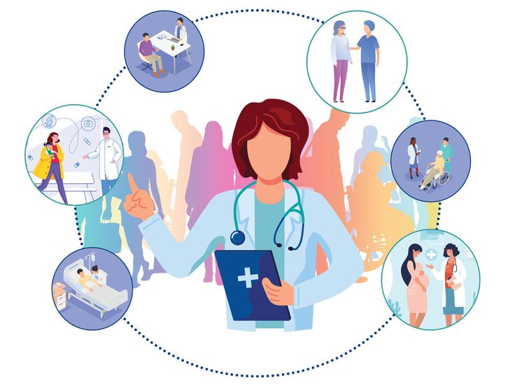

خدمات پرستاری، همراهی و یاری
در دنیایی که سلامت مهمترین دارایی ماست، ما اینجا هستیم تا با دقت و مهربانی از شما مراقبت کنیم. تیم مجرب ما با سالها تجربه، خدمات پرستاری حرفهای را برای مراقبت از بیماران در منزل ارائه میدهد.
سرویس ها
پرستاری سالمندان
مراقبتهای روزانه، کنترل داروها، همراهی و حمایت روانی برای سالمندان و
کمک به حفظ استقلال و بهبود کیفیت زندگی آنها
پرستاری کودکان و نوزادان
مراقبت از نوزادان، تغذیه، کمک به رشد و سلامت کودک و
نظارت بر وضعیت جسمی و روحی کودک و ارائه راهنمایی به والدین
همراه بیمار در منزل و بیمارستان
کمک به بیماران در انجام امور روزمره و مراقبتهای پزشکی و
حمایت روحی و جسمی برای تسریع روند بهبود
تزریقات و سرمتراپی در منزل
انجام تزریقات، سرمتراپی و کنترل داروهای مصرفی بدون نیاز به مراجعه به مراکز درمانی و
کاهش خطرات ناشی از مراجعه به بیمارستان و راحتی بیشتر بیمار
فیزیوتراپی و توانبخشی
ارائه خدمات توانبخشی و درمانهای فیزیوتراپی برای بیماران نیازمند و
کمک به بهبود حرکت، کاهش دردهای عضلانی و افزایش استقلال بیمار
کنترل فشار خون و تست قند خون
اندازهگیری فشار خون و تست قند خون در منزل و
ارائه مشاوره برای مدیریت بیماریهای مزمن مانند دیابت و فشار خون بالا
مشاوره پزشکی و پرستاری آنلاین
ارائه راهنماییهای پزشکی و پرستاری از طریق تماس و
کمک به بیماران در تصمیمگیریهای درمانی و مدیریت بیماریها
کشیدن بخیه و پانسمان زخمها
تعویض پانسمان زخمهای جراحی و کشیدن بخیه در منزل و
کاهش خطر عفونت و تسریع روند بهبود زخمها